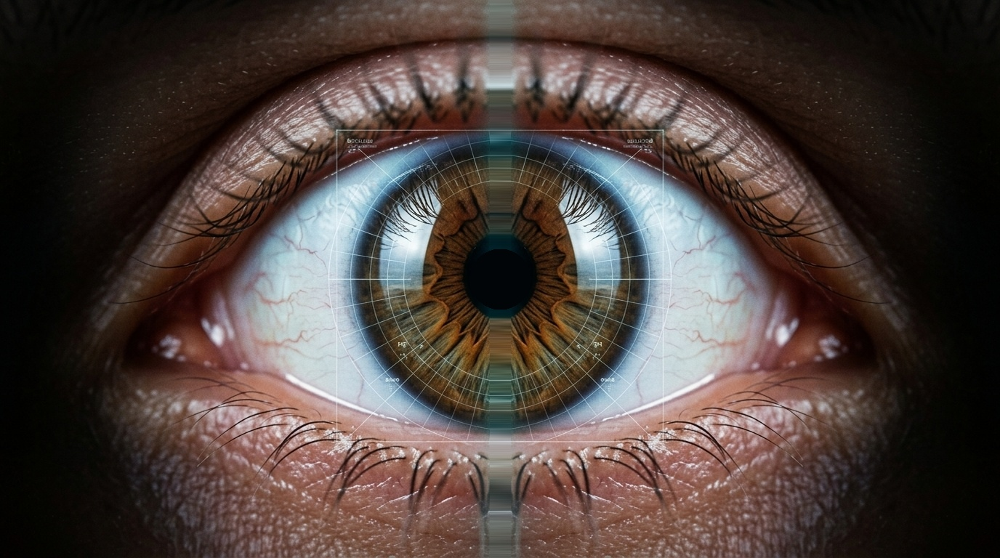
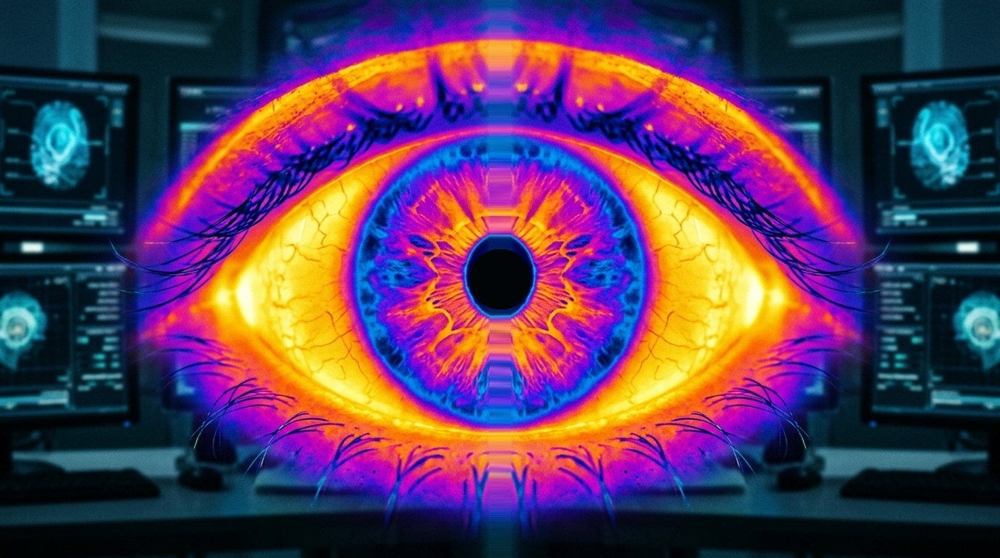
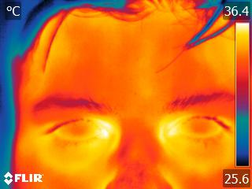
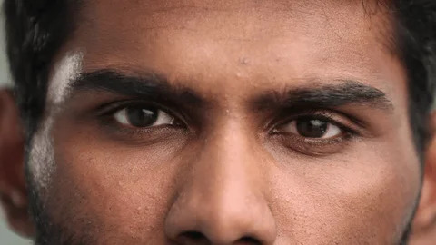
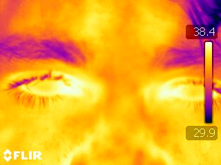
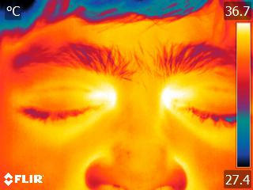

1/8
Dry Eye Detector
Understand your eye in a minute
✨

LIVE SCAN • NATURAL → THERMAL
Please fill in Name, Age, and Gender to proceed.
Questionnarie survey & Thermogram Analysis
For screening purposes only. Not a medical diagnosis
Dry Eye Detector • Assessment Mode
1. Do your eyes ever feel gritty, painful, or sore?
Upload Thermal Eye Image
Drag & drop or browse Thermal Eye image
Upload only Thermal Image.Normal Images Are Restricted.
Supported Formats: Upload .PNG, .JPG, or .JPEG files.
Maximum Image Size: 5MB
Instructions
For Best Results, Please Follow These Instructions:
- Image Capture: Capture both eyes clearly after 5s, with minimal background.
- Positioning: Look straight at the camera with both eyes fully open.
- Eye State: Blink naturally, then keep both eyes fully open for 5 seconds before capture. Avoid shooting immediately after a blink.
- Remove Obstructions: Remove glasses and contact lenses before capturing the image.
- Avoid Eye Drops & Rubbing: Do not use eye drops or rub your eyes for at least 30 minutes before capture.
- Location: All imaging must be performed indoors in a temperature-controlled environment.
- Clear Image: Ensure the thermal image is sharp, well-framed, and free from motion blur or obstruction.

Thermal Image ✅

Digital Image ❌

Bar Overlap ❌

Close/half eye ❌
🔒
End-to-end local diagnostic processing. Your health data remains private.
Align the Eye Pointer
Center the pointers on both eyes for accurate analysis.
Thermal Scan:
Active
Patient_Thermal_Scan.jpg
640 × 480 px
Right Eye - Central Cornea
--°C
Left Eye - Central Cornea
--°C
Calibrate Scale Limits:
Least:
°C
-
High:
°C
Proceeding
0%
Thermal Eye Image Scanner & Possibilities Analyzer
🎯 Left & Right Eye Regions
Patient Thermal Scan
⚠️
upload thermal image
Normal camera images are rejected. Only FLIR thermal images can be processed.
Right Eye - Central Cornea
--°C
Left Eye - Central Cornea
--°C
Interactive Probe:
X: 160, Y: 120
Region: Central Cornea
34.95°C
Thermal Screening Result
✅
Normal Eye Detected
Bilateral Assessment
Symmetric (ΔT 0.15°C)
Right Eye
Normal
Central (CC):
35.2°C
Tear film breakup:
4.2%
Left Eye
Normal
Central (CC):
35.0°C
Tear film breakup:
5.1%
Symptom Assessment Result
0
/ 100 Index